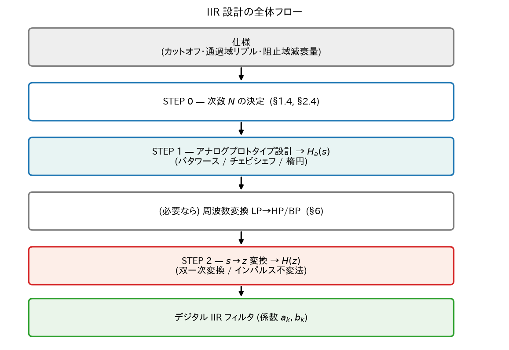
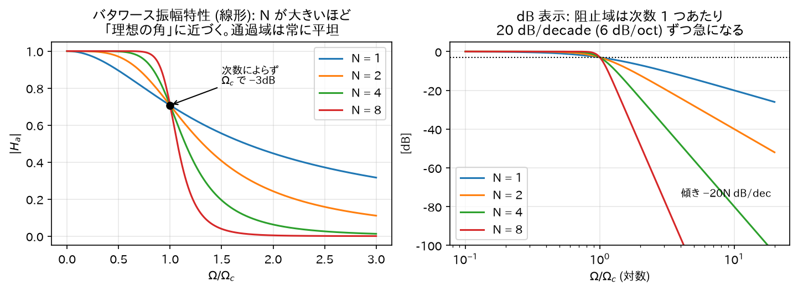
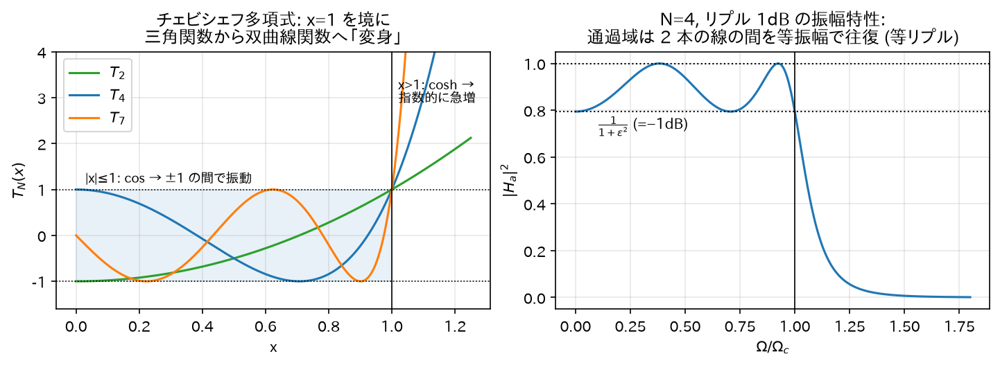
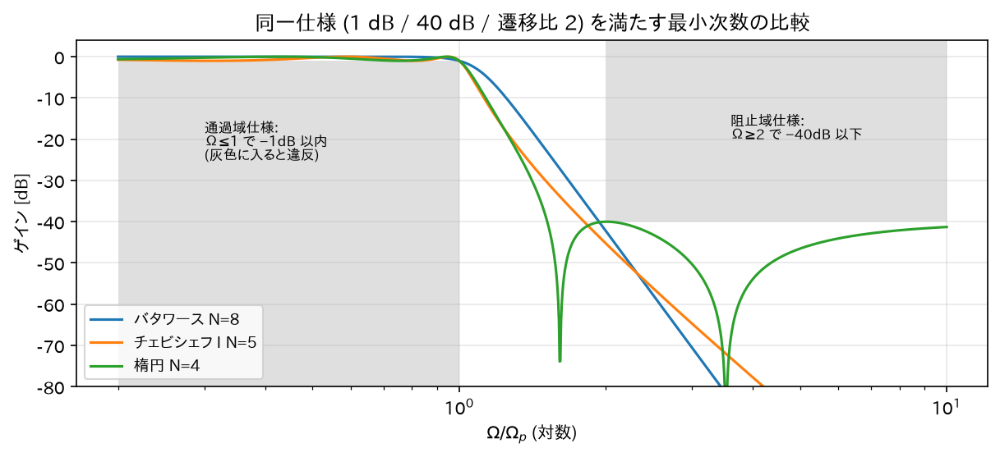
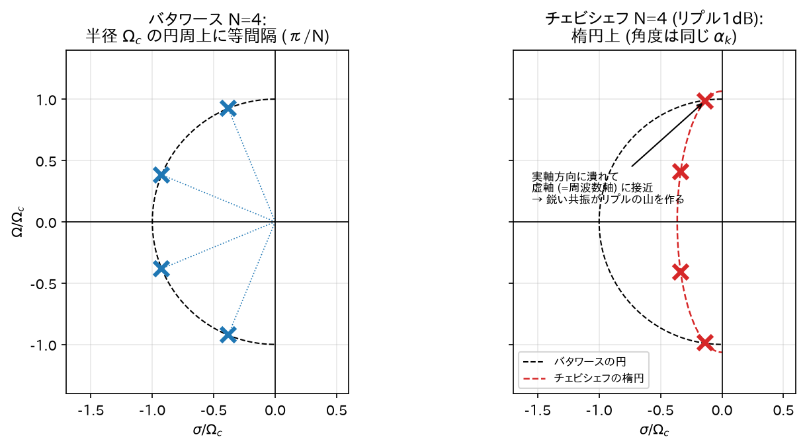
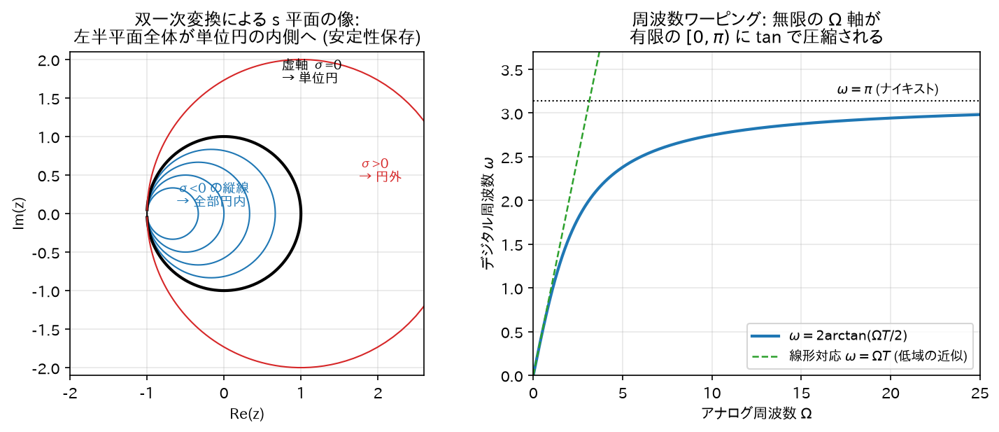
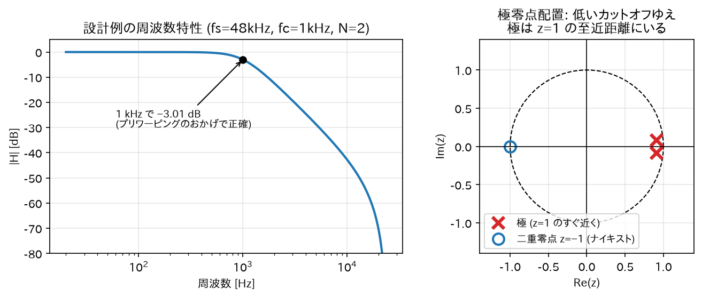
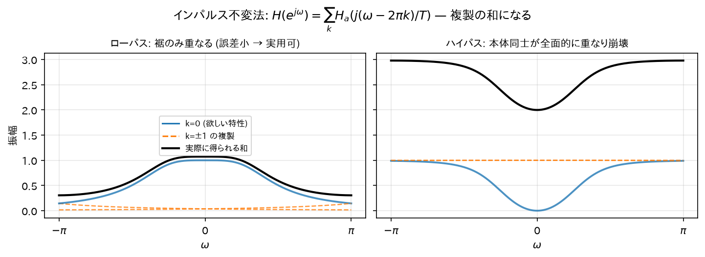

Chapter 08
IIR フィルタの設計法
IIR 設計の王道は「よくできたアナログフィルタを設計し、それをデジタルに変換する」という 2 段構え。 アナログフィルタ理論には 100 年分の蓄積（バタワース、チェビシェフ、楕円）があり、それを丸ごと流用する。

直感: なぜわざわざアナログ経由なのか。 「デジタルフィルタが欲しいなら最初から z 領域で設計すればいい」と思うのが自然だが、 z 領域で「この振幅特性に一番近い有理関数」を直接探すのは一般に非線形最適化になり、閉じた式では解けない。 一方アナログ側には「この意味で最適なフィルタはこれ」という答えが公式として存在する （バタワース = 最大平坦、チェビシェフ = 等リプル最急峻、楕円 = 両帯域等リプルで理論限界）。 「解けている問題に変換してから解く」のは数学の常套手段で、IIR 設計はその典型例。
0. 前提: ラプラス変換と s 平面（最小限）
アナログ側では Z 変換の連続時間版であるラプラス変換を使う:
- \(s = j\Omega\)（虚軸上）で評価するとフーリエ変換 = アナログの周波数特性。 （Z 変換で単位円上が周波数特性だったのと並行的。）
- アナログの安定条件は「極が左半平面（\(\mathrm{Re}(s) < 0\)）」。 理由: 極\(s_0 = \sigma_0 + j\Omega_0\)は時間応答\(e^{s_0 t} = e^{\sigma_0 t}e^{j\Omega_0 t}\)を生み、 \(\sigma_0 < 0\)のときだけ\(|e^{s_0 t}| = e^{\sigma_0 t} \to 0\)と減衰するから。
| アナログ (s 平面) | デジタル (z 平面) | |
|---|---|---|
| 周波数特性を読む場所 | 虚軸\(s = j\Omega\) | 単位円\(z = e^{j\omega}\) |
| 安定領域（極の置き場） | 左半平面 | 単位円の内側 |
(a) 基本対\(e^{s_0 t}u(t) \leftrightarrow \dfrac{1}{s-s_0}\)の導出
\(\mathrm{Re}(s) > \mathrm{Re}(s_0)\)のとき\(|e^{(s_0-s)t}| = e^{\mathrm{Re}(s_0-s)t} \to 0\)（\(t\to\infty\)）なので上端は 0:
(b) 「\(1/s\)= 積分器」の導出
初期静止（\(x(0)=0\)、因果的）の信号に対し、微分のラプラス変換を部分積分で計算:
（上端は ROC 内で\(x(t)e^{-st}\to 0\)、下端は\(x(0)=0\)で消える。） つまり微分 ↔\(s\)倍。ゆえに\(y(t) = \int_{-\infty}^t xd\tau\)なら\(y' = x\)より\(sY = X\)、すなわち積分 ↔\(\dfrac{1}{s}\)倍。∎
(c) 「安定 ⟺ 極が左半平面」の導出
因果的で有理な\(H_a(s)\)（単根とする）を部分分数展開（05 章のヘヴィサイド法と同一手順）すると、(a) の対から:
連続時間の BIBO 安定条件は\(\int_0^\infty |h_a(t)|dt < \infty\)（03 章の離散版と同じ論法: 和を積分に替えるだけ）。 \(|e^{s_i t}| = e^{\sigma_i t}|e^{j\Omega_i t}| = e^{\sigma_i t}\)に注意して:
全極で\(\sigma_i < 0\)なら有限和で安定。逆にある\(\sigma_1 \geq 0\)なら\(|h_a(t)|\)が 0 に減衰せず発散（06 章の支配極の議論と同一）。∎
1. バタワースフィルタ
1.0 定義
\(N\)次バタワースローパスフィルタの振幅特性:
\(\Omega_c\): カットオフ角周波数、\(N\): 次数。
直感: この式の読み方。 分母は「1 + (周波数比)の\(2N\)乗」。\(\Omega \ll \Omega_c\)では\((\Omega/\Omega_c)^{2N}\)がほぼ 0 なので ゲインほぼ 1（素通し）、\(\Omega \gg \Omega_c\)では\(2N\)乗の項が爆発してゲインが潰れる（遮断）。 「\(2N\)乗」という高い冪がスイッチの役割を果たし、\(N\)が大きいほどスイッチの切り替わりが急になる。
1.1 性質の導出 1: カットオフでの値
\(\Omega = \Omega_c\)で\(|H_a|^2 = \frac{1}{1+1} = \frac{1}{2}\)、つまり\(|H_a| = \frac{1}{\sqrt 2}\)（−3.01 dB）。次数によらない。
1.2 性質の導出 2: 最大平坦性 (maximally flat)
\(x = (\Omega/\Omega_c)^2\)とおくと\(|H_a|^2 = \frac{1}{1 + x^N}\)。これを\(x=0\)の周りでテイラー展開する。 \(|u| < 1\)での等比級数\(\frac{1}{1+u} = 1 - u + u^2 - \cdots\)に\(u = x^N\)を代入:
\(\Omega\)に関する\(1\)次から\(2N-1\)次までの導関数が\(\Omega = 0\)ですべて 0 （展開に\(\Omega^2, \Omega^4, \dots, \Omega^{2N-2}\)の項が存在しないため）。
直感: バタワースは「通過帯域を可能な限り平坦（リプルなし）にする」ことに全振りした設計。 \(N\)次の自由度をすべて「\(\Omega=0\)での平坦さ」に注ぎ込んでいる、と読める（微係数を\(2N-1\)個も 0 にしている）。 音質・計測など「通過帯域を汚したくない」用途の第一候補。代償として遮断の鋭さはチェビシェフに劣る。
1.3 性質の導出 3: 高域での減衰傾度
\(\Omega \gg \Omega_c\)では\(|H_a|^2 \approx (\Omega/\Omega_c)^{-2N}\)、つまり\(|H_a| \approx (\Omega/\Omega_c)^{-N}\)。 デシベルでは
周波数が 10 倍になるごとに\(-20N\)dB。すなわち \(-20N\)dB/decade（\(-6N\)dB/oct）。次数 1 つで 6dB/oct 稼げる。

1.4 設計の核心: 仕様から次数 N を決める式の導出
実際の設計は「\(N\)を先に知っている」のではなく、仕様から\(N\)を逆算するところから始まる。 仕様は普通、次の 4 つの数で与えられる:
- 通過域端\(\Omega_p\)で減衰\(A_p\)dB 以内（例: 1 dB）
- 阻止域端\(\Omega_s\)で減衰\(A_s\)dB 以上（例: 40 dB）
減衰量（dB）を定義通りに書くと:
2 つの条件を不等式にする。\(10^{x/10}\)を両辺にとって整理すると:
未知数は\(N\)と\(\Omega_c\)の 2 つ。\(\Omega_c\)を消去するため、2 つ目の式を 1 つ目の式で辺々割る （両辺とも正なので不等号の向きは保たれる）:
両辺の\(\log_{10}\)をとって\(N\)について解く:
これを満たす最小の整数を\(N\)とする。\(N\)が決まれば\(\Omega_c\)は 2 つの不等式のどちらか （普通は通過域側を等号にして\(\Omega_c = \Omega_p / (10^{A_p/10}-1)^{1/2N}\)）から決める。
直感: この式は「必要な減衰量 ÷ 稼げる傾き」。 分子は「通過域と阻止域でどれだけゲイン差が要るか」（要求の厳しさ）、 分母は「遷移帯域の幅が対数軸で何 decade あるか」（使える助走距離）。 §1.3 で見たように次数 1 つあたり 20 dB/decade 稼げるので、 「必要 dB ÷（20 × 助走 decade 数）」でおおよその次数が出る、というのがこの式の中身。 遷移帯域を半分に狭めると（分母が減り）次数はほぼ倍になる — 急峻さは只ではない。
数値例:\(A_p = 1\)dB、\(A_s = 40\)dB、\(\Omega_s/\Omega_p = 2\)（1 オクターブで 40 dB 落とす）:
（この同じ仕様をチェビシェフで解くと\(N=5\)で済む。§2.4 で導出する。）
1.5 極の位置の導出
\(|H_a(j\Omega)|^2 = H_a(s)H_a(-s)\big|_{s=j\Omega}\)という関係を使う （実係数なら\(\overline{H_a(j\Omega)} = H_a(-j\Omega)\)なので\(|H_a(j\Omega)|^2 = H_a(j\Omega)H_a(-j\Omega)\)、 これを\(s = j\Omega \Leftrightarrow \Omega = s/j\)で解析接続する）。 \(\Omega^2 = (s/j)^2 = -s^2\)より:
極は分母 = 0、すなわち:
右辺を極形式で書く。\((-1)^{N+1} = e^{j\pi(N+1)}\)であり、\(1 = e^{j2\pi k}\)（\(k\)整数）を掛けられるので:
\(2N\)乗根をとる:
極は半径\(\Omega_c\)の円周上に等間隔（角度間隔\(\pi/N\)）に並ぶ。 このうち左半平面にある\(N\)個（\(\mathrm{Re}(s_k) < 0\)のもの）を\(H_a(s)\)に採用する （安定なフィルタにするため。残り\(N\)個は\(H_a(-s)\)側の極）。
直感: なぜ円に並ぶのか。 極の条件は結局\(s^{2N} = (\text{定数})\)という「\(2N\)乗根」の方程式であり、 複素数の\(n\)乗根は常に円周上に等間隔に並ぶ（02 章）。 「振幅特性が単純な冪\(1/(1+x^N)\)」という平坦さ最優先の選択が、 極配置の美しい対称性としてそのまま現れている。
具体例\(N=2\)の導出:\(k = 0,1,2,3\)で角度は\(\pi\frac{3}{4}, \pi\frac{5}{4}, \pi\frac{7}{4}, \pi\frac{9}{4}\)。 左半平面（角度が\(\pi/2\)〜\(3\pi/2\)）にあるのは\(\frac{3\pi}{4}\)と\(\frac{5\pi}{4}\):
伝達関数を組み立てる（分子は直流ゲイン 1 になるよう\(\Omega_c^2\)）:
\(s_1 + s_2 = -\sqrt{2}\Omega_c\)、\(s_1 s_2 = \Omega_c^2 e^{j(3\pi/4 + 5\pi/4)} = \Omega_c^2 e^{j2\pi} = \Omega_c^2\)より:
これが 2 次バタワースの標準形（後の設計例で使う）。
2. チェビシェフフィルタ
2.0 定義
チェビシェフ I 型:
\(\varepsilon\): リプルの大きさを決めるパラメータ、\(T_N\): チェビシェフ多項式 （\(T_N(\cos\phi) = \cos(N\phi)\)で定義される）。
バタワースとの違いは、分母の\((\Omega/\Omega_c)^{2N}\)（単調増加の冪）が \(\varepsilon^2 T_N^2(\Omega/\Omega_c)\)（通過域で振動する多項式）に置き換わった点だけである。 この置き換えの意味を、以下で式から丁寧に読み取っていく。
2.1 チェビシェフ多項式 — 漸化式の導出
「\(\cos(N\phi)\)は\(\cos\phi\)の多項式で書ける」ことをまず確認する。加法定理より:
（右辺の展開:\(\cos(N\phi \pm \phi) = \cos N\phi \cos\phi \mp \sin N\phi \sin\phi\)を足すと\(\sin\)の項が消える。） \(x = \cos\phi\)とおけば:
例:\(T_2(x) = 2x^2 - 1\)、\(T_3(x) = 4x^3 - 3x\)。 漸化式で毎回\(2x\)が掛かるので、最高次係数は\(2^{N-1}\)（\(T_N(x) = 2^{N-1}x^N + \cdots\)）。 この\(2^{N-1}\)が後で「同じ次数でバタワースより減衰が稼げる」理由として効いてくる（§2.3）。
2.2 性質の導出 1: 通過域が「等リプル」になる仕組み
通過域\(0 \leq \Omega \leq \Omega_c\)では\(x = \Omega/\Omega_c \in [0, 1]\)。 このとき\(\phi = \arccos x\)が実数なので:
は\(\cos\)そのもの、つまり必ず\(-1\)と\(+1\)の間を往復する。 \(x\)が 1 から 0 へ動く間に\(N\arccos x\)は\(0\)から\(N\pi/2\)まで動くので、\(T_N\)は通過域内で 何度も\(\pm 1\)に触れながら振動する。したがって:
- \(T_N = 0\)の瞬間: ゲイン最大値 1（0 dB）
- \(T_N = \pm 1\)の瞬間: ゲイン最小値\(\frac{1}{1+\varepsilon^2}\)
つまり通過域のゲインは上下 2 本の水平線の間で正確に等振幅で振動する（等リプル: equiripple）。 リプルの深さを dB で書くと:
これが設計時の\(\varepsilon\)の決め方: 許せるリプル量（dB）を決めれば\(\varepsilon\)が一意に決まる。 例:\(A_p = 1\)dB なら\(\varepsilon = \sqrt{10^{0.1}-1} = 0.5088\)。
直感: なぜ「わざと波打たせる」と得なのか。 バタワースは通過域の誤差（1 からのズレ）を\(\Omega = 0\)の 1 点に押し込めて極端に小さくし、 帯域端に向かって誤差が単調に増えるに任せる。「1 点だけ完璧、端はだんだん悪い」配分。 チェビシェフは同じ誤差予算を通過域全体に均等にばら撒く。「どこも同じだけ少し悪い」配分。 誤差の最大値を抑えるという意味では均等配分が最適（ミニマックス近似）であり、 浮いた自由度がそのまま帯域端での切れ味に回る。 「一夜漬けで 1 科目 100 点を狙うより、全科目 80 点を狙う方が合計は伸びる」配分の話である。
2.3 性質の導出 2: 阻止域では cosh になって急増する
阻止域\(\Omega > \Omega_c\)、つまり\(x > 1\)では\(\arccos x\)が実数でなくなる。代わりに \(x = \cosh u\)（\(u = \mathrm{arccosh}x > 0\)）とおくと:
が成り立つ。導出: 双曲線関数の加法定理から
（\(\cosh(Nu \pm u) = \cosh Nu \cosh u \pm \sinh Nu \sinh u\)を足すと\(\sinh\)の項が消える。） これは §2.1 の漸化式と同じ漸化式であり、初期値も\(\cosh(0)=1=T_0(\cosh u)\)、 \(\cosh(u)=T_1(\cosh u)\)で一致する。同じ漸化式・同じ初期値なら全\(N\)で一致する（帰納法）。∎
\(\cosh(Nu) = \frac{e^{Nu}+e^{-Nu}}{2}\)は\(u\)に対して指数的に増える。\(x \gg 1\)では \(\mathrm{arccosh}x = \ln(x + \sqrt{x^2-1}) \approx \ln 2x\)を使って:
（§2.1 の最高次係数と一致。検算 ✓）。したがって阻止域の遠方では:
バタワースの\(1/x^{2N}\)と比べると、同じ次数・同じ傾き（−20N dB/dec）だが、 \(2^{2(N-1)}\)倍 = 約\(6(N-1)\)dB だけ余分に減衰している。
直感: 通過域は\(\cos\)（有界・振動）、阻止域は\(\cosh\)（指数爆発）—— 同じ 1 本の式が、\(x=1\)を境に三角関数から双曲線関数へ「変身」するのがチェビシェフの仕掛け。 通過域では暴れを\(\pm1\)に閉じ込めて等リプルを作り、境界を越えた瞬間に指数関数の馬力で叩き落とす。 \(6(N-1)\)dB のボーナスは「リプルを許した見返り」の定量的な正体である。

2.4 設計の核心: 仕様から次数 N を決める式の導出
\(\Omega_c = \Omega_p\)（通過域端をリプル帯の端に一致させる）とし、§1.4 と同じ仕様 （\(\Omega_p\)で\(A_p\)dB 以内、\(\Omega_s\)で\(A_s\)dB 以上）を課す。
通過域条件は §2.2 の通り\(\varepsilon = \sqrt{10^{A_p/10}-1}\)で消化済み。阻止域条件は:
\(\Omega_s/\Omega_p > 1\)なので §2.3 の cosh 表現\(T_N(x) = \cosh(N\mathrm{arccosh}x)\)を使い、 両辺の\(\mathrm{arccosh}\)をとって（\(\cosh\)は\(u>0\)で単調増加なので不等号保存）:
数値例（§1.4 と同一仕様:\(A_p=1\)dB,\(A_s=40\)dB,\(\Omega_s/\Omega_p = 2\)）:
同じ仕様でバタワースは\(N=8\)だった。次数 8 → 5、biquad 換算で 4 段 → 2.5 段。 乗算回数・メモリ・レイテンシがそのまま 4 割減る——これがリプルを許す実利である。
直感: なぜ式の形が「log の比」から「arccosh の比」に変わったのか。 バタワース（§1.4）では減衰が冪\(x^N\)で増えるので、対数をとると\(N\)が線形に出てきて log の比になった。 チェビシェフでは減衰が\(\cosh(N\mathrm{arccosh}x)\)で増えるので、逆関数 arccosh をとると \(N\)が取り出せて arccosh の比になる。式の形の違いは「減衰の増え方が冪か指数か」の違いをそのまま映している。

2.5 極の位置の完全導出 — 極は楕円に並ぶ
バタワース（§1.5）と同じ道具立てで、\(H_a(s)H_a(-s)\)の極を求める。分母 = 0 は:
ステップ 1: 複素角の導入。\(v = s/(j\Omega_c)\)とおき、\(v = \cos\theta\)を満たす複素数 \(\theta = \alpha + j\beta\)（\(\alpha, \beta\)実数）を探す。このとき定義より\(T_N(v) = \cos(N\theta)\)。 複素引数の\(\cos\)を実部・虚部に分解する（加法定理 +\(\cos(j\beta)=\cosh\beta\),\(\sin(j\beta)=j\sinh\beta\)、02 章）:
ステップ 2: 実部と虚部の連立。 これが純虚数\(\pm j/\varepsilon\)に等しいので:
\(\cosh \geq 1 > 0\)なので実部の条件は\(\cos(N\alpha) = 0\)、すなわち:
このとき\(\sin(N\alpha_k) = \pm 1\)なので、虚部の条件は\(\sinh(N\beta) = \pm\frac{1}{\varepsilon}\)、すなわち:
ステップ 3: s に戻す。\(s = j\Omega_c \cos(\alpha_k + j\beta)\)を展開する:
安定側（実部 < 0）を選ぶ。\(k = 0,\dots,N-1\)で\(\alpha_k \in (0,\pi)\)だから\(\sin\alpha_k > 0\)であり、 \(\beta = -\beta_0\)を採れば実部が負になる。よって左半平面の\(N\)個の極は:
ステップ 4: 軌跡の同定。\(\sigma_k = \mathrm{Re}(s_k)\),\(\Omega_k = \mathrm{Im}(s_k)\)とおくと:
極は、実軸方向の半径\(\Omega_c\sinh\beta_0\)・虚軸方向の半径\(\Omega_c\cosh\beta_0\)の楕円上に並ぶ。∎
直感: 「円を虚軸に向かって押し潰した」のがチェビシェフ。 \(\sinh\beta_0 < \cosh\beta_0\)なので、楕円は必ず横（実軸方向）に潰れている。 つまりチェビシェフの極はバタワースの円配置に比べて虚軸（= 周波数軸）のすぐ近くに置かれる。 06 章で見たとおり、極が周波数軸に近いほどその周波数で鋭いピークを作る—— 通過域の各リプルの山は、すぐそばに置かれた極 1 個ずつが持ち上げているのである。 「切れ味を買うために極を危険な崖っぷち（虚軸ギリギリ）に寄せた」設計と読める。
整合性チェック: リプルを小さくする（\(\varepsilon \to 0\)）と\(\beta_0 = \frac{1}{N}\mathrm{arcsinh}\frac{1}{\varepsilon} \to \infty\)となり \(\sinh\beta_0 \approx \cosh\beta_0\)、つまり楕円は円に近づき、バタワース的な配置に戻る。 「リプル 0 のチェビシェフ ≒ バタワース」という直感が極配置のレベルでも成り立っている。

2.6 参考: チェビシェフ II 型と楕円フィルタ
- II 型（逆チェビシェフ）: リプルを阻止域側に移した変種（通過域は単調・平坦）。 \(|H|^2 = \dfrac{\varepsilon^2 T_N^2(\Omega_s/\Omega)}{1 + \varepsilon^2 T_N^2(\Omega_s/\Omega)}\)の形で、阻止域に伝達零点を持つ。
- 楕円（Cauer）フィルタ: 通過域・阻止域の両方を等リプルにしたもの。 ミニマックス近似を両帯域に適用した理論的最急峻で、同一仕様なら最小次数。 導出には楕円関数（ヤコビの sn 関数）が要るため本章では割愛するが、 「誤差予算を両帯域に均等配分し切った極限」という位置づけだけ押さえておけばよい。
3. 双一次変換 (bilinear transform) — s から z への橋
3.1 導出（台形積分による）
積分器\(y(t) = \int x(t)dt\)、すなわち\(H_a(s) = \dfrac{1}{s}\)をデジタルで近似することを考える （任意のアナログ伝達関数は積分器の組み合わせで書けるので、積分器の対応を決めればすべて決まる）。
時刻\(t = nT\)と\(t = (n-1)T\)の間の積分を台形則で近似する:
（台形則: 区間幅 × 両端の平均高さ。）離散信号として書き直す:
Z 変換する:
これがアナログ積分器\(\frac{1}{s}\)のデジタル版。よって対応関係は:
デジタルフィルタは\(H(z) = H_a(s)\big|_{s = \frac{2}{T}\frac{1-z^{-1}}{1+z^{-1}}}\)で得られる。
直感: 「アナログ回路のすべての積分器を、台形則のデジタル積分器に総取っ替えする」のが双一次変換。 台形則は「両端の平均」を使うので前進・後退オイラー法より対称性がよく、 この対称性が次に示す「安定性の完全保存」という強い性質の源になっている。
3.2 性質の導出 1: 安定性が保存される
\(s = \sigma + j\Omega\)に対応する\(z\)を求める。上式を\(z\)について解く:
絶対値を評価する。\(s = \sigma + j\Omega\)を代入:
分子と分母の差は:
よって:
- \(\sigma < 0\)（左半平面）⇒ 分子 < 分母 ⇒\(|z| < 1\)（単位円内）
- \(\sigma = 0\)（虚軸）⇒\(|z| = 1\)（単位円上）
- \(\sigma > 0\)⇒\(|z| > 1\)
左半平面全体が単位円の内側にきれいに写る。したがって安定なアナログフィルタを双一次変換すると 必ず安定なデジタルフィルタになる。 これが双一次変換が標準になっている最大の理由。∎
3.3 性質の導出 2: 周波数の対応（ワーピング）
アナログの周波数軸\(s = j\Omega\)がデジタルの周波数軸\(z = e^{j\omega}\)のどこに写るかを計算する。 \(z = e^{j\omega}\)を代入:
分子・分母から\(e^{-j\omega/2}\)を括り出す:
（02 章の\(\sin\theta = \frac{e^{j\theta}-e^{-j\theta}}{2j}\)、\(\cos\theta = \frac{e^{j\theta}+e^{-j\theta}}{2}\)を使用。） \(s = j\Omega\)と比較して:
3.4 直感: 無限を有限に折り畳む
アナログの周波数軸は\(0 \to \infty\)の無限長。デジタルの周波数軸は\(0 \to \pi\)の有限長。 双一次変換は\(\tan\)を使って無限の軸を有限区間に非線形に圧縮する:
- 低域 (\(\omega \ll 1\)):\(\tan(\omega/2) \approx \omega/2\)より\(\Omega \approx \omega / T\)— ほぼ線形（歪みなし）
- 高域:\(\omega \to \pi\)で\(\Omega \to \infty\)— アナログの無限遠が\(\omega = \pi\)に圧縮される
この非線形圧縮を周波数ワーピングと呼ぶ。エイリアシングは発生しない（軸の折り返しではなく圧縮だから）が、 指定したカットオフが意図とズレるという副作用がある。
たとえ: 無限に長い定規を有限の紙に描くために、遠くへ行くほど目盛りを詰めて描くようなもの。 手元（低域）の目盛りはほぼ等間隔で正確、遠く（高域）ほど目盛りが密集して「縮尺が狂う」。 縮尺の狂い方は\(\tan\)で厳密にわかっているので、次のプリワーピングで完全に補正できる。

3.5 プリワーピング（ズレの補正）
デジタルでカットオフ\(\omega_c\)を実現したければ、アナログプロトタイプのカットオフを最初から
に「ずらして」設計しておけば、変換後にちょうど\(\omega_c\)に着地する。これをプリワーピングという。 （ワーピングで曲がる分をあらかじめ逆向きに曲げておく、という素直な発想。 カットオフ以外にも「正確に合わせたい周波数」——バンドパスの両端など——があれば、その各点をプリワープする。）
4. 設計例: 2 次バタワース・デジタルローパスの完全導出
仕様:\(f_s = 48\)kHz、カットオフ\(f_c = 1\)kHz →\(\omega_c = 2\pi f_c / f_s = 2\pi/48 \approx 0.13090\)rad/sample
（次数はここでは\(N = 2\)と与える。阻止域仕様から決める場合は §1.4 の式を使い、 プリワープ後の周波数比\(\tan(\omega_s/2)/\tan(\omega_p/2)\)を\(\Omega_s/\Omega_p\)として代入する。）
ステップ 1: プリワーピング
（以後の式では比の形にまとまるので\(T\)は消える。数値では \(\tan(\omega_c/2) = \tan(0.06545) \approx 0.065544\)。）
ステップ 2: アナログプロトタイプ（§1.5 で導出済みの 2 次バタワース）
ステップ 3: 双一次変換を代入
\(s = \frac{2}{T}\frac{1-z^{-1}}{1+z^{-1}}\)を代入し、記号を軽くするため
とおく。分子・分母を\(\left(\frac{2}{T}\right)^2 (1+z^{-1})^2\)で通分すると\(\frac{2}{T}\)が全部約分されて:
各項を展開する:
- \((1+z^{-1})^2 = 1 + 2z^{-1} + z^{-2}\)
- \((1-z^{-1})^2 = 1 - 2z^{-1} + z^{-2}\)
- \((1-z^{-1})(1+z^{-1}) = 1 - z^{-2}\)
分母\(= (1 - 2z^{-1} + z^{-2}) + \sqrt2\lambda(1 - z^{-2}) + \lambda^2(1 + 2z^{-1} + z^{-2})\)
\(z^{-1}\)の次数ごとに整理:
先頭係数\(D \equiv 1 + \sqrt2\lambda + \lambda^2\)で全体を割って標準形（分母先頭 1）にする:
ステップ 4: 数値を入れる (\(\lambda = 0.065544\),\(\lambda^2 = 0.0042960\),\(\sqrt2\lambda = 0.092694\),\(D = 1.096990\))
検算 1（直流ゲイン）:\(H(1) = \frac{b_0+b_1+b_2}{1+a_1+a_2} = \frac{0.0156648}{0.015665} \approx 1.0\)✓（ローパスは直流を素通し）
検算 2（安定性、07 章の安定三角形）:\(|a_2| = 0.831 < 1\)✓、\(1 + a_1 + a_2 = 0.0157 > 0\)✓、\(1 - a_1 + a_2 = 3.646 > 0\)✓ → 安定
検算 3（零点）: 分子\(\propto (1+z^{-1})^2\)→ 二重零点が\(z = -1\)（\(\omega = \pi\)= ナイキスト周波数）。 双一次変換がアナログの「\(\Omega = \infty\)でゲイン 0」を\(\omega = \pi\)に写した結果であり、ローパスとして理にかなっている。

このように双一次変換は最終的に「係数の計算式」に落ちる。世の中のオーディオ EQ の 「biquad cookbook」係数式（Robert Bristow-Johnson の Audio EQ Cookbook が有名)は、 すべてこの手順を各フィルタタイプについて実行した結果である。
5. もう一つの変換: インパルス不変法（参考）
発想: アナログフィルタのインパルス応答をそのままサンプリングする:
5.1 極の写り方の導出
アナログの 1 極\(H_a(s) = \frac{A}{s - s_0}\)のインパルス応答は \(h_a(t) = A e^{s_0 t} u(t)\)（§0(a) のラプラス対）。サンプリングすると:
これは公比\(e^{s_0 T}\)の指数列なので、Z 変換は（05 章の基本対より）:
つまり極は\(z = e^{s_0 T}\)に写る。\(\mathrm{Re}(s_0) < 0\)なら\(|z| = e^{\mathrm{Re}(s_0) T} < 1\)で安定性も保存される。
5.2 弱点の導出: エイリアシングが「必ず」起きる
01 章で導出したとおり、連続信号\(x_a(t)\)をサンプリングした列\(x_a(nT)\)のスペクトルは 元のスペクトルの\(\frac{1}{T}\)倍を周期\(\frac{2\pi}{T}\)で複製した和になる。 \(h[n] = Th_a(nT)\)と先頭に\(T\)を掛けてあるので\(\frac{1}{T}\)が打ち消えて:
デジタルの周波数特性は、アナログの特性を\(2\pi\)おきにずらして無限に足し合わせたものになる。 ここで問題になるのが、有理関数である\(H_a\)の裾の重さである。分子\(M\)次・分母\(N\)次なら:
つまり冪でしか減衰せず、どの周波数でも厳密に 0 にはならない（帯域制限されていない）。 したがって複製同士の裾は必ず重なり、和の中で混ざる = エイリアシング。 双一次変換（軸を 1 対 1 で圧縮するだけで、足し算が発生しない）との決定的な違いがここにある。
直感: 被害の大小はフィルタの種類で決まる。
- ローパス: 裾は高域で\(1/\Omega^{N-M}\)に小さくなっているので、重なる量はわずか。実用可。
- ハイパス: 通過域が\(\Omega = \infty\)まで続く、つまり「裾」ではなく「本体」が無限に伸びている。 複製すると本体同士が全面的に重なって特性が崩壊する。使用不可。
- 同じ理由でバンドストップも不可。インパルス不変法は LPF（と狭帯域 BPF）専用と覚える。
それでもこの方法に存在意義があるのは、時間波形を保存するから （\(h[n]\)はアナログのインパルス応答の正確なサンプル値そのもの）。 ステップ応答やリンギングの「形」を再現したいシミュレーション用途では双一次変換より適する。

6. 周波数変換: ローパス以外を作る
ここまでの理論はすべてローパスプロトタイプの話だった。ハイパス・バンドパスは 「ローパスの周波数軸を変数変換で読み替える」ことで作る。プロトタイプは カットオフ 1 rad/s に正規化した\(H_{LP}(s)\)（§1 の式で\(\Omega_c = 1\)としたもの）とする。
6.1 LP → HP 変換の導出
周波数軸上で何が起きるか:\(s = j\Omega\)を代入すると変換後の引数は
実係数フィルタの振幅特性は偶関数（\(|H(-j\Omega)| = |H(j\Omega)|\)、06 章）なので:
対応表を作ると:
| 変換後の\(\Omega\) | 参照される LP の周波数\(\Omega_c/\Omega\) | 意味 |
|---|---|---|
| \(\Omega \to \infty\) | \(\to 0\)（LP の通過域の芯） | 高域を通す ✓ |
| \(\Omega = \Omega_c\) | \(1\)（LP のカットオフ） | カットオフが\(\Omega_c\)に ✓ |
| \(\Omega \to 0\) | \(\to \infty\)（LP の阻止域の果て） | 直流を遮断 ✓ |
周波数軸をカットオフを支点に裏返したことになり、ローパスがハイパスになる。
安定性の確認:\(H_{LP}\)の極\(p\)（\(\mathrm{Re}(p) < 0\)）は変換後\(\Omega_c/s = p\)、 すなわち\(s = \Omega_c/p\)に移る。その実部は
（\(\Omega_c > 0\)、\(\mathrm{Re}(\bar p) = \mathrm{Re}(p)\)）。左半平面の極は左半平面に留まり、安定性は保存される。∎
具体例（2 次バタワース HP）: 正規化プロトタイプ\(H_{LP}(s) = \frac{1}{s^2 + \sqrt2 s + 1}\)に \(s \to \Omega_c/s\)を代入し、分子分母に\(s^2\)を掛けると:
分母は §1.5 の LP と同一で、分子だけ\(\Omega_c^2 \to s^2\)に変わる。 \(s = 0\)の二重零点（直流の完全遮断）が現れており、ハイパスの形として理にかなっている。 双一次変換すると、この零点は\(z = 1\)（\(\omega = 0\)）に写る。
6.2 LP → BP 変換（要点）
\(s = j\Omega\)上での引数は\(j\dfrac{\Omega^2 - \Omega_0^2}{B\Omega}\)となり:
- \(\Omega = \Omega_0\): 引数 0 = LP の直流 → 中心周波数を素通し
- \(\Omega \to 0\)および\(\Omega \to \infty\): 引数\(\to \pm j\infty\)= LP の阻止域 → 両側を遮断
\(s\)が 2 次式に化けるので次数は 2 倍になる（\(N\)次 LP →\(2N\)次 BP）。 「直流の周りの通過域を\(\Omega_0\)の周りに引っ越して両側に開く」変換と読める。
実務メモ: デジタルフィルタ設計では、この変換を①アナログプロトタイプに施してから 双一次変換するのが定石（合わせたい周波数\(\Omega_0\)や帯域端はそれぞれプリワープする）。 オーディオ用 biquad の HPF/BPF/notch の cookbook 係数式は、まさにこの合成 （正規化 LP → 周波数変換 → 双一次変換）を閉じた式に整理したものである。
7. 設計法の選び方まとめ
アナログプロトタイプの選択（誤差予算の配分方針で選ぶ）:
| プロトタイプ | 通過域 | 阻止域 | 同一仕様での次数 | 使いどころ |
|---|---|---|---|---|
| バタワース | 単調・最大平坦 | 単調 | 大（例: 8） | 通過帯域を汚したくない。音質・計測 |
| チェビシェフ I | 等リプル | 単調 | 中（例: 5） | 次数を減らしたい。リプルは許せる |
| チェビシェフ II | 単調 | 等リプル | 中 | 通過域は平坦、次数も減らしたい |
| 楕円 | 等リプル | 等リプル | 最小 | とにかく最小次数・最急峻 |
s → z 変換の選択:
| 方式 | 長所 | 短所 | 使いどころ |
|---|---|---|---|
| 双一次変換 | エイリアシングなし・安定性保存 | 周波数軸が歪む（プリワーピングで補正） | デフォルト。EQ、汎用フィルタ全般 |
| インパルス不変法 | 時間波形（インパルス応答）を保存 | エイリアシング（§5.2）。LPF 限定 | 時間応答の再現が大事な場合 |
| 直接設計（Yule-Walker 等） | 任意形状の特性を近似できる | 最適化計算が必要 | 変則的な特性が要るとき |